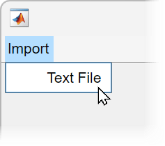
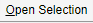
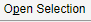
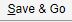

Menu
Menu UI component
- 
Description
A menu UI component displays an option at the top of a figure window or in a
context menu. Use the Menu object to modify the appearance and behavior of a
menu after you create it.
Creation
Create a menu in a figure using the uimenu function.
Properties
Menu
Menu label, specified as a character vector or string scalar. This property specifies the label that appears on the menu or menu item.
Avoid using these case-sensitive reserved words: 'default',
'remove', and 'factory'. If you must use a
reserved word, then specify a backslash character before the word. For instance,
specify 'default' as '\default'.
You can specify a mnemonic keyboard shortcut
(Alt+mnemonic) by using the ampersand
(&) character in the text for the label. The character that follows the ampersand
appears underlined in the menu when Alt is pressed. You can select
the menu item by holding down the Alt key and typing the character
shown.
To use mnemonics, you must specify a mnemonic for all menus and menu items that you define in the app. If you define mnemonics only for some menus or menu items, pressing the Alt key does not have any effect.
The table shows some examples:
| Text Value | Menu Label with Mnemonic Hints |
|---|---|
'&Open Selection' |
 |
'O&pen Selection' |
 |
'&Save && Go' |
 |
Keyboard shortcut, specified as a character or as a string that contains one character. Use this property to define a keyboard shortcut for selecting a menu item.
Example: mitem.Accelerator = "H"
Specifying an accelerator value enables users to select the menu item by pressing a character and another key, instead of using the mouse. The key sequence is platform specific.
Windows® systems: Ctrl+
acceleratorMacintosh systems: Command+
acceleratorLinux® systems: Ctrl+
accelerator
Things to keep in mind when using accelerators:
The app window must be in focus when entering the accelerator key sequence.
Accelerators cannot be used on top-level menus.
Accelerators only work when the menu item meets all these criteria.
It does not contain any submenu items.
It executes a callback function.
It has the
Visibleproperty set to'on'.Its accelerator value is not already assigned to a different active menu item in the same figure.
Separator line mode, specified as 'off' or
'on', or as numeric or logical 1
(true) or 0 (false). A
value of 'on' is equivalent to true, and
'off' is equivalent to false. Thus, you can
use the value of this property as a logical value. The value is stored as an on/off
logical value of type matlab.lang.OnOffSwitchState.
Setting this property to 'on' draws a dividing line above the
menu item.
Note
The Separator property is ignored when the menu item is a
top-level menu item.
Menu check indicator, specified as 'off' or
'on', or as numeric or logical 1
(true) or 0 (false). A
value of 'on' is equivalent to true, and
'off' is equivalent to false. Thus, you can
use the value of this property as a logical value. The value is stored as an on/off
logical value of type matlab.lang.OnOffSwitchState.
Setting this property to 'on' places a check mark next to the
corresponding menu item. Setting it to 'off' removes the check
mark. You can use this feature to show the state of menu items that enable or disable
functionality in your application.
Note
The Checked property is ignored when the menu item is:
A top-level menu item
A menu item that contains one or more child menu items
Menu label color, specified as an RGB triplet, a hexadecimal color code or one of the color options listed in the table.
RGB triplets and hexadecimal color codes are useful for specifying custom colors.
An RGB triplet is a three-element row vector whose elements specify the intensities of the red, green, and blue components of the color. The intensities must be in the range
[0,1]; for example,[0.4 0.6 0.7].A hexadecimal color code is a character vector or a string scalar that starts with a hash symbol (
#) followed by three or six hexadecimal digits, which can range from0toF. The values are not case sensitive. Thus, the color codes"#FF8800","#ff8800","#F80", and"#f80"are equivalent.
Alternatively, you can specify some common colors by name. This table lists the named color options, the equivalent RGB triplets, and hexadecimal color codes.
| Color Name | Short Name | RGB Triplet | Hexadecimal Color Code | Appearance |
|---|---|---|---|---|
"red" | "r" | [1 0 0] | "#FF0000" |
|
"green" | "g" | [0 1 0] | "#00FF00" |
|
"blue" | "b" | [0 0 1] | "#0000FF" |
|
"cyan"
| "c" | [0 1 1] | "#00FFFF" |
|
"magenta" | "m" | [1 0 1] | "#FF00FF" |
|
"yellow" | "y" | [1 1 0] | "#FFFF00" |
|
"black" | "k" | [0 0 0] | "#000000" |
|
"white" | "w" | [1 1 1] | "#FFFFFF" |
|
This table lists the default color palettes for plots in the light and dark themes.
| Palette | Palette Colors |
|---|---|
Before R2025a: Most plots use these colors by default. |
|
|
|
You can get the RGB triplets and hexadecimal color codes for these palettes using the orderedcolors and rgb2hex functions. For example, get the RGB triplets for the "gem" palette and convert them to hexadecimal color codes.
RGB = orderedcolors("gem");
H = rgb2hex(RGB);Before R2023b: Get the RGB triplets using RGB =
get(groot,"FactoryAxesColorOrder").
Before R2024a: Get the hexadecimal color codes using H =
compose("#%02X%02X%02X",round(RGB*255)).
Interactivity
Tooltip, specified as a character vector, string scalar, cell array of character vectors, string array, or 1-D categorical array. Use this property to display a message when the user hovers the pointer over the component at run time. To display multiple lines of text, specify a cell array of character vectors or a string array. Each element in the array becomes a separate line of text. If you specify this property as a categorical array, MATLAB® uses the values in the array, not the full set of categories.
Setting this property has no effect on objects of this type.
Callbacks
Menu selected callback function, specified as one of these values:
A function handle.
A cell array in which the first element is a function handle. Subsequent elements in the cell array are the arguments to pass to the callback function.
A character vector containing a valid MATLAB expression (not recommended). MATLAB evaluates this expression in the base workspace.
For more information about specifying a callback property value as a function handle, cell array, or character vector, see Specify a Callback Function.
The callback responds depending on the location of the menu item and the type of interaction:
Left-clicking a menu expands that menu and triggers its callback.
While any menu is expanded, pausing on any other parent menu (or top-level menu) expands that menu and triggers its callback.
Note
Do not use a callback to dynamically change menu items. Deleting, adding, and
replacing menu items in a callback can result in a blank menu. Instead, use the
Visible property to hide or show menu items. You can also
enable and disable menu items by setting the Enable property.
To fully repopulate menu items, delete and create them outside the callback.
Menus Associated with Context Menus
When the menu component is associated with a context menu (as opposed to a menu
item at the top of a figure window), this callback function can access specific
information about the user's interaction with the app. MATLAB passes this information in a MenuSelectedData
object as the second argument to your callback function. In App Designer, the
argument is named event. You can query the object properties
using dot notation. For example, event.ContextObject returns
information about which component the user right-clicked to open the associated
context menu.
Note
You can specify a MenuSelectedFcn callback for any
Menu object. However, the
MenuSelectedData object in the callback event data is
available only when the context menu that the menu belongs to is associated with
a UI component (as opposed to a graphics object, such as an
Axes or Line object), or is associated
with a container that contains only UI components.
This table lists the properties of the MenuSelectedData
object.
| Property | Value |
|---|---|
ContextObject | Object that the app user right-clicked to open the context menu |
InteractionInformation | Information about where in the component the app user
right-clicked to open the context menu. This information is
stored as an object with different properties depending on the
value of For
example, if |
Source | Context menu object that executes the callback |
EventName | 'MenuSelected' |
This table lists the properties of the InteractionInformation
object. The properties depend on which object the app user right-clicked to open the
context menu.
ContextObject | InteractionInformation Property | Value |
|---|---|---|
| Any | Location | Location where the user right-clicked relative to the
bottom-left corner of the parent container of the
The
value of |
ScreenLocation | Location where the user right-clicked relative to the
bottom-left corner of their primary display, returned as a
two-element vector of the form The value of | |
Table | DisplayRow | Row that the user right-clicked as it appears visually in the table, returned as a numeric scalar. If the user
has not sorted the table, then |
DisplayColumn | Column that the user right-clicked as it appears visually in the table, returned as a numeric scalar. If the
user has not rearranged the table, then
| |
Row | Row that the user right-clicked as it corresponds to the original table data, returned as a numeric scalar. If the user has not sorted the table, then
| |
Column | Column that the user right-clicked as it corresponds to the original table data, returned as a numeric scalar. If the user has not rearranged the table,
then | |
RowHeader | Whether the user right-clicked the table row header, returned as
a logical 0 (false) or
1 (true). | |
ColumnHeader | Whether the user right-clicked the table column header, returned
as a logical 0 (false) or
1 (true). | |
Tree | Node | Right-clicked node, returned as a
If the user
right-clicked an area of the tree that is not associated with a
node, then |
Level | Level of the right-clicked node, returned as a numeric
scalar. Nodes parented directly to the If the user right-clicked an
area of the tree that is not associated with a node, then
| |
ListBox | Item | Index of the right-clicked list box item, returned as a numeric scalar. If the user right-clicked an area of
the list box that is not associated with an item, then
|
Callback Execution Control
Parent/Child
Parent object, specified as a Figure object,
another Menu object, or a ContextMenu object.
You can move a menu item to a different window, or move it under a different menu by
setting this property. Specify the parent as an existing Menu
object to add menu items to a menu, or to nest menu items.
Menu children, returned as an empty GraphicsPlaceholder or a
1-D array of Menu objects.
You cannot add or remove child components using the Children
property. Use this property to view the list of children or to reorder the child menu
items.
To add a child menu to this list, set the Parent property of
another Menu object to this Menu object.
Identifiers
This property is read-only.
Type of graphics object, returned as 'uimenu'.